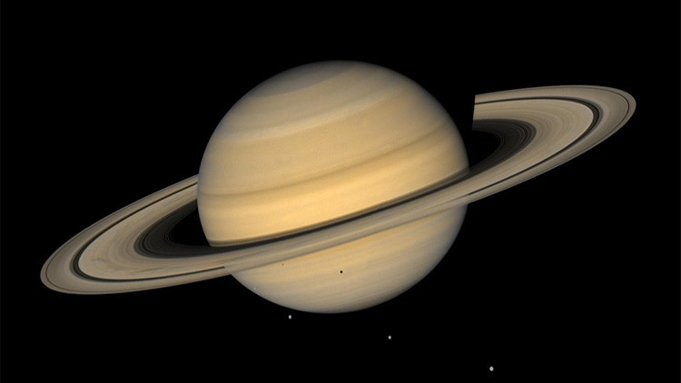
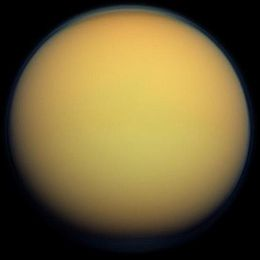

SATURNO
Saturno è il sesto pianeta del Sistema solare in ordine di distanza dal Sole e il secondo pianeta più massiccio dopo Giove. Con un raggio medio 9,5 volte quello della Terra e una massa 95 volte superiore a quella terrestre, Saturno, con Giove, Urano e Nettuno, è classificato come gigante gassoso.

Della sessantina di lune conosciute che orbitano intorno al pianeta, Titano è la maggiore ed anche l'unica luna del Sistema solare ad avere un'atmosfera significativa

Titano
Saturno possiede un sistema di anelli planetari, composti da milioni di piccoli oggetti ghiacciati, della grandezza che varia dal micrometro al metro, orbitanti attorno al pianeta sul suo piano equatoriale, e organizzati in un anello piatto. Poiché l'asse di rotazione di Saturno è inclinato rispetto al suo piano orbitale, anche gli anelli risultano inclinati. Questa natura "granulare" degli anelli fu dimostrata per via teorica fin dal 1859 dal fisico scozzese James Clerk Maxwell.